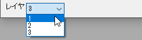

Origin 2023から、右Y軸と左Y軸の両方を表示し、表示タブで各軸を再スケールを設定すると、左と右の2つの垂直アイコンが表示され、左Y軸と右Y軸のグリッド線を個別に編集できます。
このタブでは、軸のグリッド線のスタイル、位置などを編集します。2Dグラフでは、垂直/水平方向で、3Dグラフでは、3方向（X、Y、Z) で個別に編集できます。
|
Origin 2023から、右Y軸と左Y軸の両方を表示し、表示タブで各軸を再スケールを設定すると、左と右の2つの垂直アイコンが表示され、左Y軸と右Y軸のグリッド線を個別に編集できます。 |
グリッド線の編集前に、複数レイヤグラフのレイヤ切り替えにレイヤリストを使用できます。

主グリッド線を表示するには、表示チェックボックスにチェックをします。主グリッド線とは、各軸の主目盛から引かれる直線のことです。
ドロップダウンリストから、線の色を選択してください。
ドロップダウンリストから、線のスタイルを選択してください。
太さコンボボックスで、線の太さをポイント単位で指定します。1ポイント = 1/72インチ = 0.0353 mmです。
反対にチェックを付けると、現在の軸の反対側に直線を表示します。
Y=（またはX=）にチェックを付けて、値を入力し、指定した値での線を追加します。
Note:
|